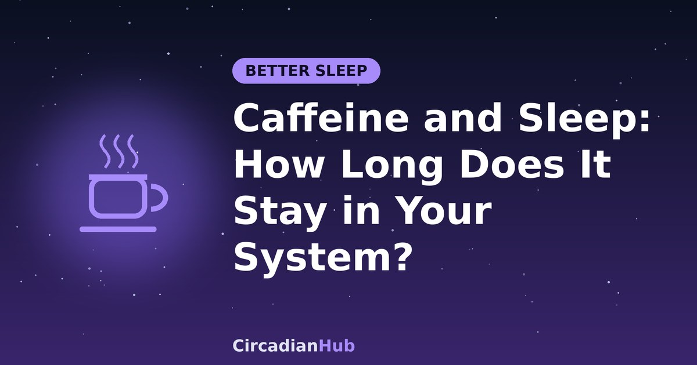

Caffeine and Sleep: How Long Does It Stay in Your System?

That afternoon coffee feels harmless. You drink it at 15:00, feel fine by evening and fall asleep at your usual time. So why do you wake at 03:00, or feel flat the next morning? Caffeine lasts far longer in the body than the buzz does, and it can reduce your sleep without you noticing. This guide explains how long caffeine stays in your system, what the research says, and how to choose a cutoff time that suits your own bedtime.
How caffeine works
While you are awake, a chemical called adenosine builds up in the brain and increases your pressure to sleep. Caffeine blocks the receptors adenosine uses, so you feel less sleepy. It does not remove tiredness or replace sleep. It masks the signal, and the adenosine keeps accumulating behind the scenes. Our coffee nap article shows how this can be used on purpose.
After you drink it, caffeine is absorbed quickly. Levels in the blood usually peak somewhere between 30 and 60 minutes later, and you feel the strongest effect around then.
How long does caffeine stay in your body?
The key number is the half-life: the time it takes the body to clear half of the caffeine. In healthy adults the average is around five hours, which matches the five to six hours mentioned in our coffee nap guide. Individual values vary a great deal, and reported ranges run from under two hours to around ten.
A half-life of five hours has a surprising consequence. Half of the caffeine is still there five hours later, and a quarter is still there ten hours later. Here is what that looks like for a 200 mg dose, which is roughly two cups of brewed coffee, drunk at 15:00:
| Time | Hours after drinking | Caffeine still in your body (5-hour half-life) |
|---|---|---|
| 15:00 | 0 | 200 mg |
| 20:00 | 5 | 100 mg |
| 22:00 | 7 | about 76 mg |
| 01:00 | 10 | 50 mg |
| 06:00 | 15 | 25 mg |
At 22:00 you would still have more caffeine in your system than a typical cup of black tea contains. That is why a late-afternoon coffee can matter at bedtime even though the buzz is long gone.
What the research says about timing
A well-known 2013 study, led by Christopher Drake and published in the Journal of Clinical Sleep Medicine, tested a 400 mg dose of caffeine, about two to three cups of coffee. Volunteers took it at bedtime, three hours before bed, or six hours before bed, and on a separate occasion a placebo. All three caffeine times disrupted sleep. Even the dose taken six hours before bed cut measured total sleep time by more than an hour. The participants did not reliably notice the effect, because their own reports of how they slept did not match what the sleep monitor recorded.
The study was small, with only 12 healthy adults, and it used a large dose, so the effect of a smaller cup may be smaller. But the authors concluded that avoiding substantial caffeine for at least six hours before bed is supported by the evidence, and they suggested generally avoiding it after about 17:00.
The most important point is that you may not feel the damage. People tend to judge their sleep by how quickly they fell asleep, and caffeine can leave that unchanged while still making sleep lighter and shorter. Our article on sleep latency explains why falling asleep quickly is not always a sign of good sleep.
How to choose your cutoff time
A sensible rule is to stop caffeine at least six hours before your bedtime, and eight or more hours if you are sensitive or already sleep poorly. Count back from when you plan to fall asleep, not from when you go to bed.
| Bedtime | Minimum cutoff (6 hours) | Cautious cutoff (8 to 10 hours) |
|---|---|---|
| 21:30 | 15:30 | 11:30 to 13:30 |
| 22:30 | 16:30 | 12:30 to 14:30 |
| 23:30 | 17:30 | 13:30 to 15:30 |
| 00:30 | 18:30 | 14:30 to 16:30 |
If you are not sure where you sit, try a simple experiment. For two weeks, move your last caffeinated drink to before 14:00, and keep the rest of your routine the same. Note how long it takes to fall asleep, how often you wake and how you feel in the morning. The CircadianHub calculator can help you find a consistent bedtime to count back from.
Why caffeine affects people differently
Two people can drink the same coffee and have very different nights. The main reasons are:
- Genetics. Variations in the liver enzyme that breaks down caffeine make some people fast metabolisers and others slow ones.
- Smoking. Smokers clear caffeine more quickly, and stopping smoking slows clearance, so caffeine can feel stronger afterwards.
- Hormonal contraceptives. These can slow the breakdown of caffeine, so its effects last longer.
- Pregnancy. The half-life lengthens substantially as pregnancy progresses. Doctors generally advise limiting caffeine, and commonly suggest staying under 200 mg a day, but check with your own doctor.
- Liver health and medication. Some liver conditions and some medicines slow caffeine clearance. If you take regular medication, ask a pharmacist.
- Age. Many people notice that they become more sensitive to caffeine with age, and teenagers are often advised to have far less than adults.
- Habit. Regular drinkers build some tolerance to the alertness effect, but the research suggests caffeine can still affect their sleep.
How much caffeine is in your drink?
The figures below are approximate and vary by brand, size and brewing method, so check the label where you can.
| Drink | Typical caffeine |
|---|---|
| Brewed coffee, 240 ml (8 oz) | About 95 mg, often 70 to 140 mg |
| Espresso, single shot | About 60 mg |
| Black tea, 240 ml | About 45 mg |
| Green tea, 240 ml | About 30 mg |
| Cola, 330 ml (12 oz) | About 35 mg |
| Energy drink, one can | About 80 to 300 mg or more |
| Decaf coffee, 240 ml | About 2 to 15 mg |
| Dark chocolate, 30 g | About 10 to 25 mg |
Do not forget hidden sources, such as pre-workout powders, some painkillers and chocolate desserts. Food and drink regulators generally consider up to 400 mg a day, roughly four cups of brewed coffee, to be a safe limit for most healthy adults, but that is an upper limit for health and not a sleep-friendly target. Many people sleep better on much less.
Caffeine and night shift workers
For night workers the cutoff is counted from the time you plan to sleep, not from midnight. If you finish a shift and go to bed at 08:00, a coffee at 06:00 on the way home is only two hours from bed, and the research above suggests it can cut your daytime sleep short. Count back six hours from your planned sleep and your last caffeinated drink should be around 02:00. Our night shift nutrition guide and night shift sleep schedule use the same rule.
- Use caffeine in the first half of the shift, when you are most likely to need it.
- Late in the shift, rely on bright light, movement, a snack and a short break instead.
- Before a night shift, a short planned nap, possibly combined with coffee, can help you start alert. See the coffee nap hack.
- If you need increasing amounts to stay awake, treat that as a sign you are short of sleep. Our guide to shift work sleep disorder explains when to ask for help.
The caffeine and sleep debt loop
Poor sleep makes you reach for more caffeine, and more caffeine makes the next night worse. After a few rounds of this you can be running on short sleep and several cups a day without noticing. If this sounds familiar, read our article on sleep debt and weekend catch-up sleep, since paying back the debt usually reduces the urge for extra coffee.
How to cut back without a headache
- Move the cutoff first. Bring your last caffeine earlier by an hour or two every few days, before changing the amount.
- Then reduce the amount gradually. Cut by about a quarter each week, or swap one cup for half-caffeine or decaf.
- Expect some symptoms. Withdrawal headaches, tiredness and irritability are common in the first days and usually pass within about a week.
- Replace the ritual. A warm drink like herbal tea keeps the routine without the stimulant.
- Add morning light and movement. See morning sunlight and your circadian rhythm for how daylight supports alertness.
Signs caffeine may be affecting your sleep
- You take longer than about 20 minutes to fall asleep, or wake in the early hours.
- Your sleep feels light and you wake often.
- You wake unrefreshed, and then need caffeine to get started.
- Your heart feels like it is racing or you feel jittery or anxious in the evening.
- Your sleep improves on days when you have less caffeine.
For more ideas, see how to fall asleep faster and our pre-bed routine guide.
Frequently asked questions
Does decaf affect sleep?
Decaf has very little caffeine, but it is not zero. A cup or two is unlikely to matter for most people, but very sensitive people may notice small amounts.
I fall asleep easily after an evening coffee. Is it really a problem?
It may be. Research suggests that caffeine can reduce total sleep time and the depth of sleep without changing how fast you drop off, and people often do not notice. Try the two-week experiment above and see how you feel.
Does caffeine affect deep sleep?
Studies suggest that caffeine, especially late in the day, can reduce deep, slow-wave sleep and increase lighter sleep. The effect depends on the dose and the person.
What about tea, cola and energy drinks?
They all contain caffeine, just in different amounts, so the same timing rules apply. Energy drinks can contain very high doses.
Can I speed up getting caffeine out of my system?
Not really. Water, exercise or a cold shower will not clear it faster. Only time does. If you have taken too much, wait it out, and seek medical help if you have chest pain, a very fast heartbeat or severe symptoms.
Is caffeine safe for everyone?
No. People with anxiety, heart rhythm problems, reflux, high blood pressure or who are pregnant should ask a doctor about caffeine limits.
Summary
- Caffeine has an average half-life of about five hours, so a quarter may still be in your body ten hours later.
- A large dose taken even six hours before bed cut sleep by more than an hour in a small study, and people did not notice.
- Stop caffeine at least six hours before you plan to sleep, and eight or more if you are sensitive.
- Night workers should count back from their sleep time, which often means stopping around 02:00.
- Genetics, smoking, pregnancy and some medicines change how long caffeine lasts.
- Cut back gradually, and treat a growing need for caffeine as a sign you may need more sleep.
Last updated: 1 October 2026. Links are general background reading from public-health organisations. How we write and update our guides.
Medical disclaimer: This article is for general information only and is not medical advice. If you have persistent sleep problems, excessive daytime sleepiness, or concerns about caffeine and a health condition or medication, speak with a doctor or pharmacist.